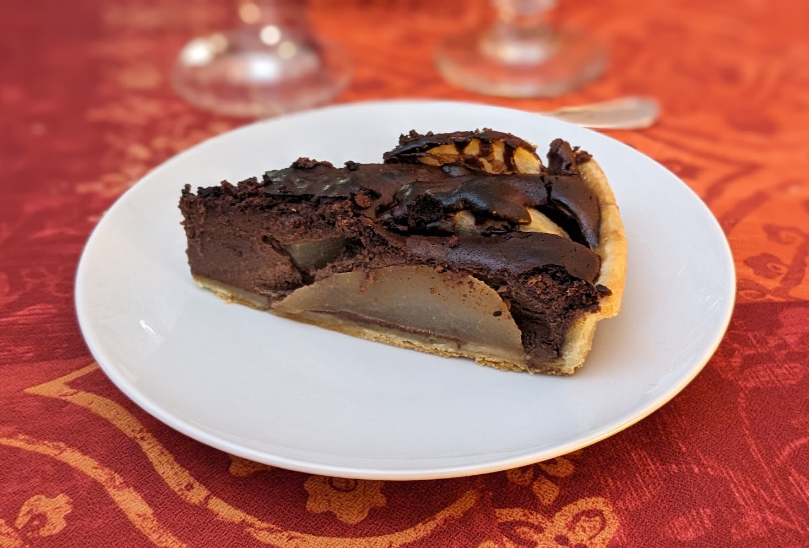

Tarte poire-chocolat

- Une pâte feuilletée
- Trois-quatre poires
- 50g de beurre
- 100g de sucre
- 200g de chocolat (noir, de préférence)
- 3 œufs
- 15cL de crème liquide
- Faire fondre le chocolat avec le beurre dans une casserole.
- Pendant ce temps, éplucher les poires, enlever leur cœur, et les couper en quartiers. Faire préchauffer le four à 200°C.
- Mélanger ensemble les œufs, le sucre et la crème.
- Mettre la pâte dans un moule à tarte (sur du papier sulfurisé). Verser le mélange chocolat/beurre sur le fond de tarte, égaliser. Déposer les poires dessus, puis verser le mélange œufs/sucre/crème sur le tout.
- Enfourner pour environ une heure de cuisson. Vérifier aux alentours de 45 minutes où ça en est, si c'est déjà bien brun sur le dessus, réduire un peu la température (180°C, par exemple).
Remarque : on peut aussi saupoudrer le tout d'un peu de cassonade 15 minutes avant la fin de la cuisson, pour que ça soit encore plus joli.